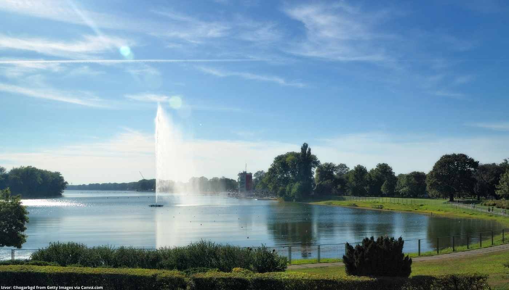
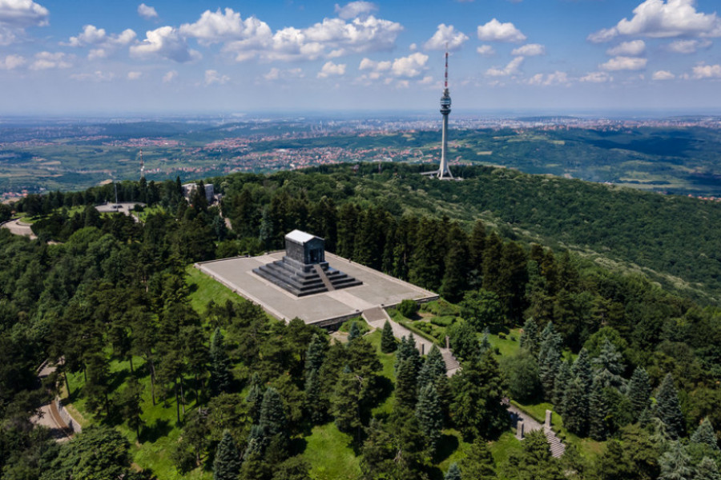
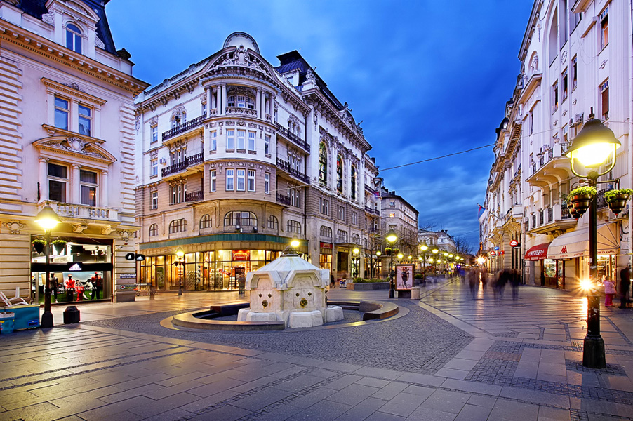

Beograd je jedan od najstarijih gradova u Evropi i, pored Atine, najveća urbana celina na Balkanu. Najstariji arheološki nalazi sa njegovog područja sežu u peti milenijum pre nove ere. Pripadnici keltskog plemena su osnovali Singidunum u 3. veku pre nove ere, dok prvo pominjanje Beograda datira iz 878. godine. Tokom svoje duge i burne istorije, Beograd je osvajalo 40 armija, a 38 puta je podizan iz pepela.
Beograd je glavni grad Srbije, sa oko 1,6 miliona stanovnika. Ima prvorazredni saobraćajni značaj, kao značajno drumsko i železničko čvorište, a takođe i međunarodno rečno i vazdušno pristanište i telekomunikacijski centar. Prostire se na 3,6 % teritorije Srbije, a njemu živi 15,8% stanovništva Srbije i radi 31,2% svih zaposlenih u Srbiji. Beograd ima status posebne teritorijalne jedinice u Srbiji, koja ima svoju autonomnu gradsku upravu. Njegova teritorija je podeljena na 17 opština, koje imaju svoje lokalne organe vlasti.
Beograd je prestonica srpske kulture, obrazovanja i nauke. U njemu je najveća koncentracija institucija iz oblasti nauke i umetnosti od nacionalnog značaja. Tu je Srpska akademija nauka i umetnosti, osnovana 1886. kao Srpska kraljevska akademija; Narodna biblioteka Srbije, osnovana 1832; Narodni muzej, osnovan 1841. i Narodno pozorište, osnovano 1869. Grad je takođe i sedište Beogradskog univerziteta, osnovanog 1808. kao Velika škola, i Univerziteta umetnosti.
Beograd je glavni grad Srbije i jedan od najvažnijih gradova na Balkanskom poluostrvu. Nalazi se na ušću reke Save u Dunav, što ga čini ključnom tačkom u geografskom smislu. Geografske koordinate Beograda su otprilike 44.8 stepeni severne geografske širine i 20.5 stepeni istočne geografske dužine. Ovo ga smešta u središnjoj Evropi.
Beograd se nalazi na raskrsnici između Centralne Evrope i Balkana, što mu daje izuzetno važnu geopolitičku i trgovinsku ulogu. Osim toga, njegov položaj na rekama Savi i Dunavu omogućava mu da bude značajna luka za trgovinu i transport.S obzirom na svoj geografski položaj, Beograd je kroz istoriju bio predmet mnogih sukoba i promjena vlasti, ali danas je dinamičan i moderni evropski grad sa bogatom kulturom i istorijom.
BEMUS - najstariji muzički festival u čitavoj Srbiji, koji već dugi niz godina promoviše najkvalitetnije muzičko stvaralaštvo. Tokom svog trajanja ugostio je Bečku, Njujoršku, Minhensku i Berlinsku filharmoniju, pa i veliki broj najpoznatijih solista i dirigenta. Održava se u dvoranama Sava centra, Kolarčevoj zadužbini i ostalim koncertnim halama Beograda tokom 15 oktobarskih dana.
FEST - poslednji vikend februara i prva nedelja marta rezervisani su za najpoznatiji festival filmskih ostvaranje najviše vrednosti. Održava se u dvoranama Sava centra, Kulturnog centra Beograda, Doma omladine, Muzeja jugoslovenske kinoteke i drugim bioskopskim i pozorišnim salama.
Noć muzeja - Beograd je jedan od najboljih predstavnika ove manifestacije koja se organizuje u više od 100 gradova Srbije. Tokom ovog događaja svi muzeji, galerije, biblioteke i instituti otvoreni su za posetioce, a sadržaji su prilagođeni svim uzrastima. Noć muzeja je najbolji način promocije pravih kulturnih vrednosti
Beogradski maraton - jednodnevni događaj koji promoviše zdrav život i pravi sportski duh. Održava se u maju svake godine i predstavlja najveću trku kroz glani grad Srbije. Organizuje tri trke: trku zadovoljstva, polumaraton i maraton, koji su prilagođeni različitim nivoima fizičke spreme. Počinje od Trga Nikole Pašića, a vodi kroz sve delove grada.
GamesCon - još jedna od manifestacija koja afirmiše savremene tokove i tehnologiju. Okuplja ljubitelje kompjuterskih igara, igara za mobilne telefone i društveniih igara, a predstavlja i popularne filmske, televizijske i stripske trendove. Održava se na Beogradskom sajmu 28. i 29. novembra.
BELEF - festival koji predstavlja savršen spoj pozorišne umetnosti i muzike, vizuelnih i zvučnih efekata. Osnovan je 1991. Godine, a od tada su se na njemu predstavili: Dušan Makavejev, Nikita Mihalkovi, Egon Savin, Mark Dženkins. Održava se od 27. Juna do 17. jula na više lokacija u gradu.
Kalemegdan je najbolji svedok duge kulture i istorije Beograda. Ovaj prostrani park prepun je skrivenih hodnika, lavirinata, mostova i prelepih lokacija. Sa Kalemegdana sa pruža i nestvaran pogled na Novi Beograd. Ovde se nalazi i čuvena Beogradska tvrđava. Utvrđenje se nalazi na ušću dve reke, tako da je i sama priroda Kalemegdana nešto što je zaista vredno videti i osetiti iz prve ruke. Na Kališu se nalazi Vojni muzej, spomenik Pobednik, prelepa crkva Svete Ružice koja je savršeno mesto za sve turiste i parove kao i Galerija prirodnjačkog muzeja.
Nekadašnje ostrvo, današnje poluostrvo Ada Ciganlija, nastalo je na četvrtom kilometru reke Save od njenog ušća u Dunav. Neki hroničari naziv ovog ostrva pronalaze u složenici keltskih reči singa (ostrvo) i lia (podvodno zemljište), pa se tako došlo do reči „singalija“ od koje će u kasnijoj transkripciji nastati reč „ciganlija“.Koristi se za sport, rekreaciju i aktivno provođenje slobodnog vremena posetilaca Ade Ciganlije. Na jezeru je održano na stotine državnih, evropskih i svetskih prvenstava u sportovima na vodi. Jezero okružuje 7,7 km duga osvetljena šetališna staza, biciklistička staza i šljunkovita plaža. Ada Ciganlija je danas najveći sportsko – rekreativno – kulturno – zabavni centar u Beogradu, koji u svojoj ponudi sadrži preko 50 otvorenih sportskih igrališta , adrenalinske aktivnosti ,zabavne programe i sadržaje za najmlađe posetioce rekreativne aktivnosti.
Najveća i svakako nezaobilazna atrakcija tokom odmora u srpskoj prestonici jeste veličanstveni hram Svetog Save. Vremenom je ova crkva postala pravo čudo arhitekture i prerasla u jedan od vodećih simbola čitavog Beograda. Njen centralni položaj, zadivljujuće freske i veličine zadivljuju ogroman broj domaćih i stranih turista.Ovaj vojnik je nazvan "Neznanom junaku" jer se nikada nije saznalo tko je bio, ali se odaje počast svim vojnicima koji su dali svoje živote za domovinu. Oko spomenika se nalazi park s uređenim stazama i zelenim površinama, što ga čini mjestom gdje ljudi dolaze kako bi se opustili i uživali u prirodi.
Avala je planina koja se smjestila južno od Beograda, glavnog grada Srbije. Ova planina ima bogatu istoriju i prirodnu lepotu, te je postala simbol i kulturni spomenik regije. Na vrhu Avale, na visini od 511 metara, nalazi se Spomenik Neznanom junaku, koji predstavlja važan dio srpske istorije. pomenik Neznanom junaku podignut je kako bi se odala počast i sjećanje na sve nepoznate vojnike koji su poginuli tokom Prvog svjetskog rata. Spomenik je izgrađen 1938. godine i simbolizira hrabrost, žrtvovanje i borbu za slobodu i nezavisnost Srbije.
Skadarlija je čuvena boemska četvrt u Beogradu.Ova četvrt se nalazi u starom dijelu grada, blizu centra, i poznata je po svojim kaldrmisanim ulicama, tradicionalnim srpskim restoranima, muzičkim nastupima i umetničkom ambijentu.Skadarlija ima svoje korene u 19. veku kada je postala omiljeno stecište umetnika, pesnika, muzičara i boema. U to vreme, Skadarlija je bila mesto gde su se okupljali ljudi iz svih društvenih slojeva kako bi uživali u umetnosti, muzici, i piću.Jedan od prepoznatljivih simbola Skadarlije je Bronzana Ptica, statua koja prikazuje čuvenog srpskog pesnika Đuru Jakšića, koji je bio jedan od istaknutih figura boemske scene u ovom kvartu.Skadarlija je mesto gde se tradicija i umetnost spajaju, nudeći jedinstvenu atmosferu i iskustvo koje privlači domaće stanovništvo i posetioce iz celog sveta. Ova četvrt je postala nezaobilazna destinacija za sve one koji žele upoznati autentičnu srpsku kulturu i uživati u gastronomskim i umetničkim blagodatima Beograda.
Knez Mihailova ulica je pešačka zona, trgovački centar i ulica zakonom zaštićena kao jedno od najstarijih i najvrednijih gradskih spomeničkih ambijenata, sa nizom reprezentativnih zgrada i građanskih kuća nastalih krajem 70-ih godina 19. veka. Smatra se da je još u vreme Rimljana ovde bio centar naselja Singidunum, a u vreme Turaka na ovom području krivudale su ulice sa baštama, česmama i džamijama. Sredinom 19. veka ovde je u gornjem delu bila bašta kneza Aleksandra Karađorđevića.
